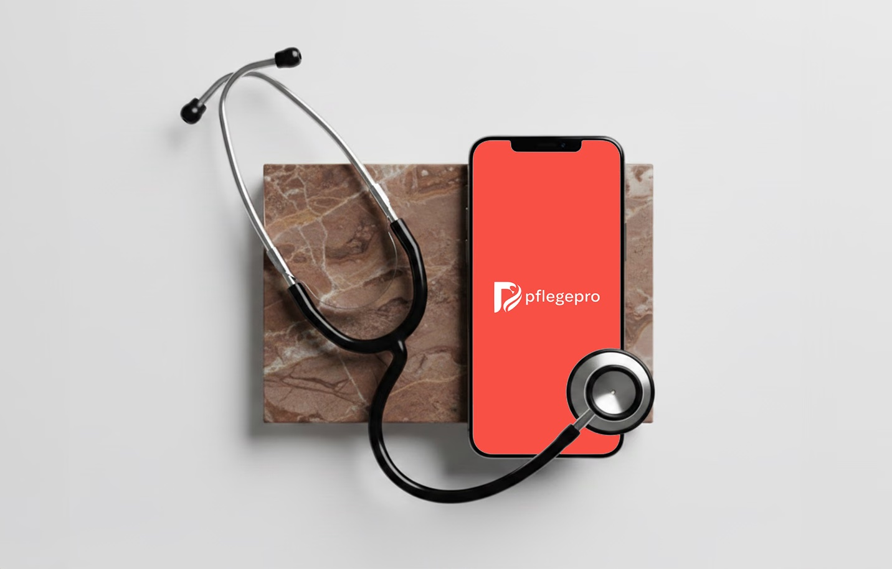
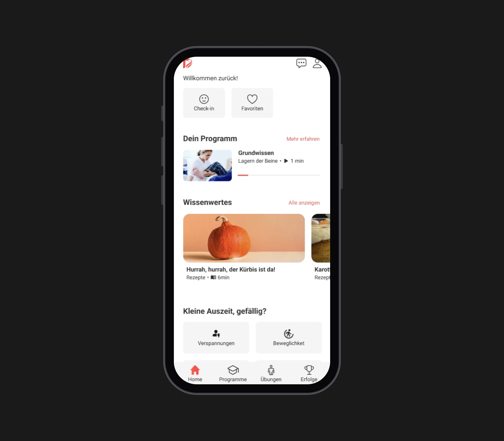
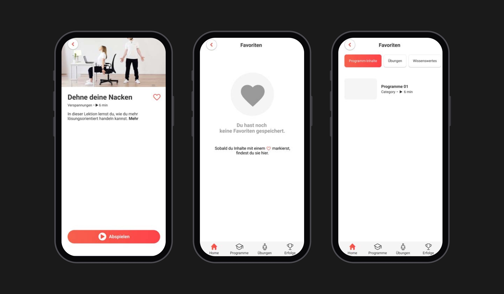
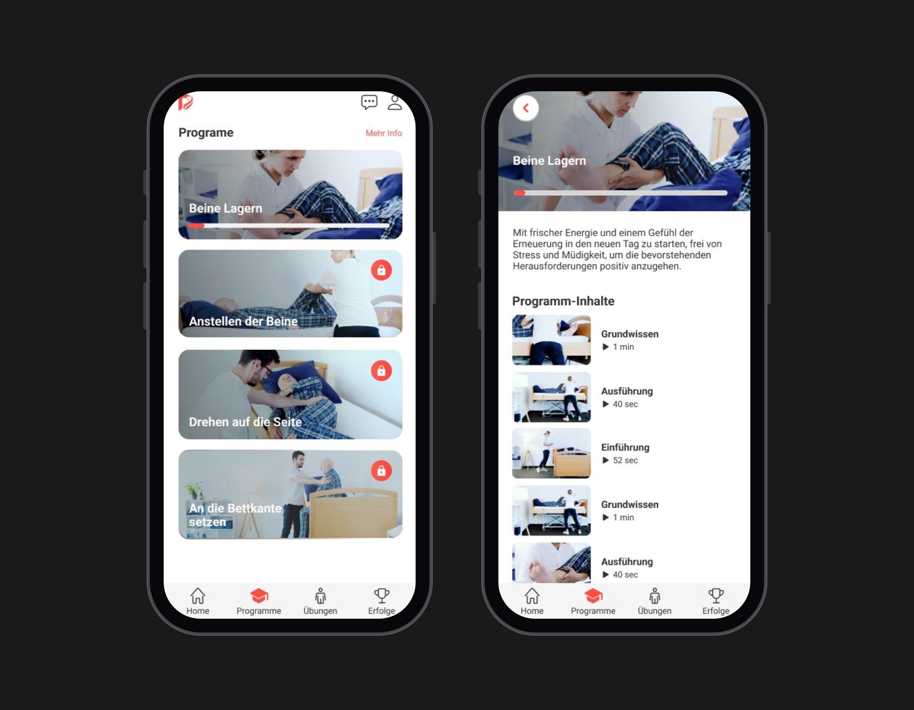
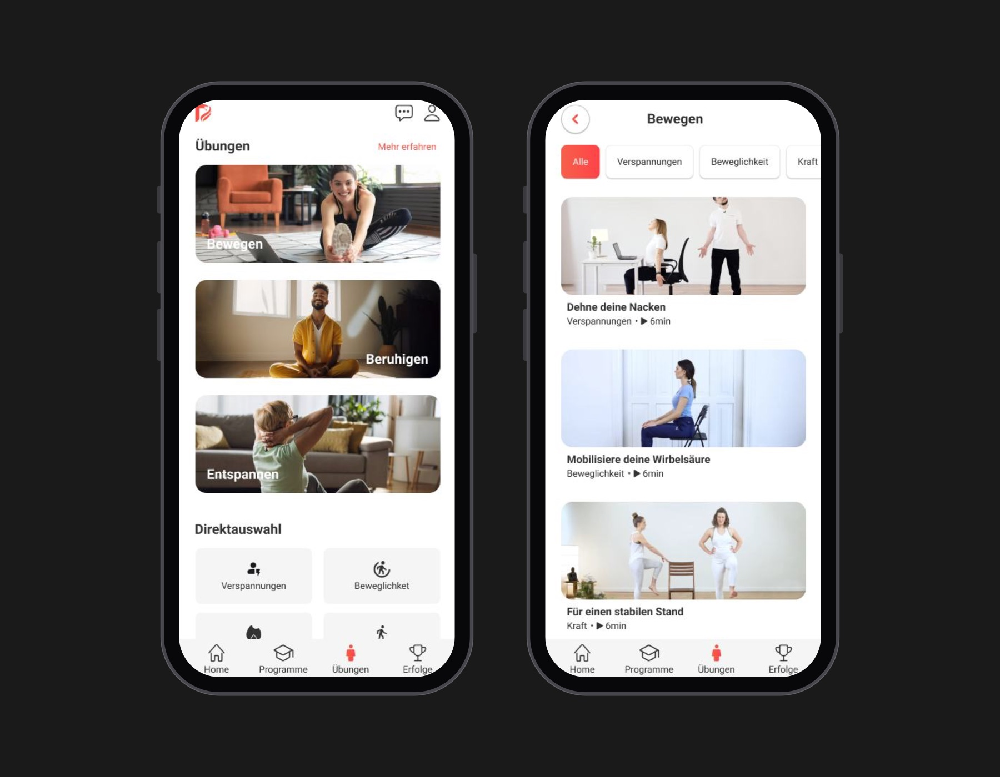

Healthcare · 2023
pflegePro
A workplace health app for safe patient handling in elderly care
Problem
pflegePro is a German mobile learning app for care workers in elderly care, part of workplace health management. Care workers often suffer from lower back pain, shoulder strain and lifting injuries, and the existing safety training felt too theoretical, hard to remember and disconnected from a real shift.
The challenge: how might we make safety training easy to understand and apply during daily care routines?
Research
I ran interviews, contextual inquiry and think-aloud usability sessions with care workers aged 22 to 58: 2 registered nurses, 2 nursing assistants and 1 nursing student. They had to find a lesson on moving a patient from bed to wheelchair, replay a movement animation, save a lesson for later and check their training progress.
- 5Care workers
- 58%Task success
- 61SUS score
Three themes came out: time pressure, fear of hurting patients or moving incorrectly, and a strong preference for visual, step-by-step guidance. The test surfaced three pain points: progress was hidden, the save icon wasn't recognized, and some screens had too much text.
"In theory you know how to lift, but on a stressful day you just forget."
"If a video is too long, I won't watch it between shifts."
Insight
Care workers already knew the theory. What they lacked was guidance short enough to use between shifts and visual enough to copy.
Making
Progress on the home screen
The home screen opens with a "Your programme" card showing the current lesson and a progress bar, instead of progress living in a separate section. Participants couldn't find their progress history and expected to see it straight away on the home screen.

A heart to save, explained
Saving uses a heart instead of a bookmark, and the empty Favorites screen explains it: once you mark something with a heart, you'll find it here. Some participants didn't recognize the bookmark icon at all.

Short, video-first lessons
Programmes and exercises lead with video, each lesson shows its length, from 40 seconds to a few minutes, and longer explanations sit behind "More info", instead of text-heavy screens. Participants said they wouldn't watch long videos between shifts and that less text would suit their working day.


Outcome
- 58% → 88%Task success
- 62% → 91%Task completion
- 2:48 → 1:22Time on task
- 61 → 86SUS score
A SUS score of 86 is in the excellent range, and ease of use per task (SEQ) rose from 4.1 to 6.2 out of 7.
Next I'd add learning paths by role and experience, offline access for use on shift and, longer term, posture feedback using the phone's sensors.